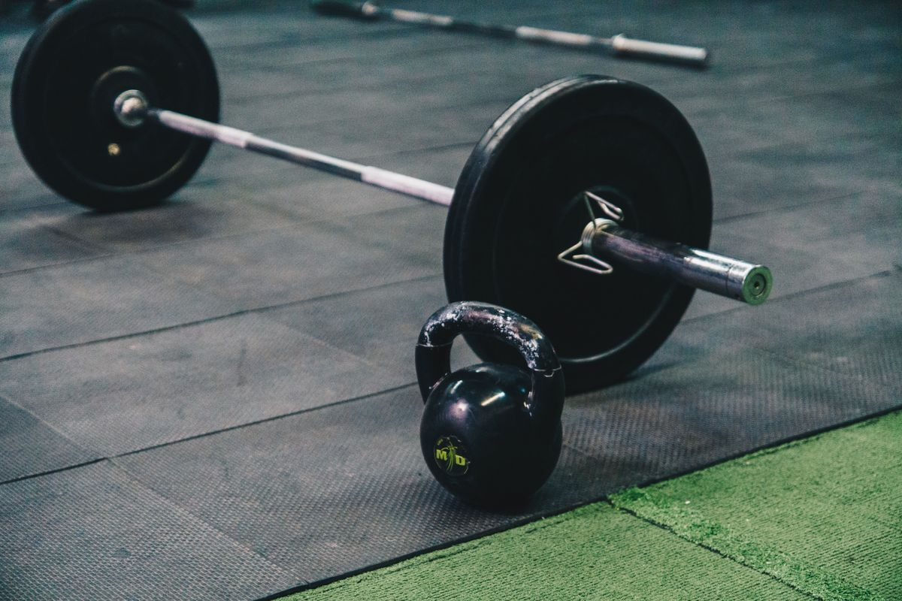
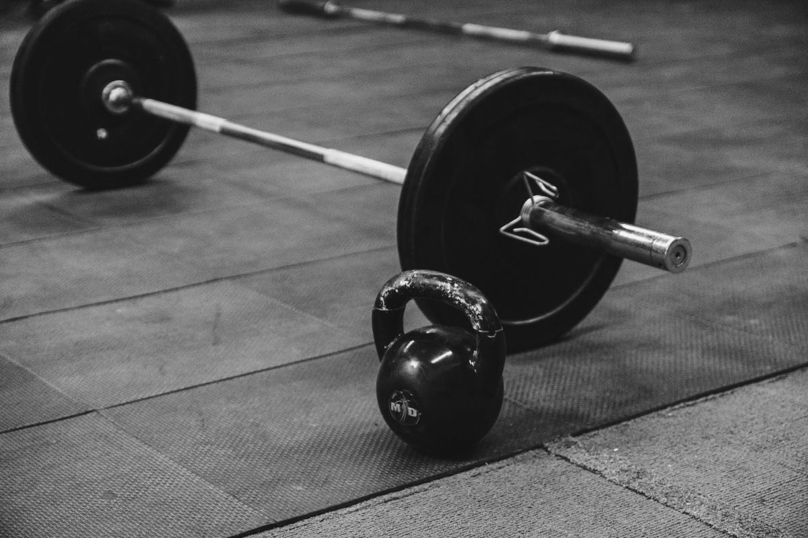

01. The Classic — Black & White
For this image, I removed the color to create a classic black-and-white look. I liked how the edit puts more focus on the gym equipment, shadows, and details in the photo.
Original Image

Edited Image
